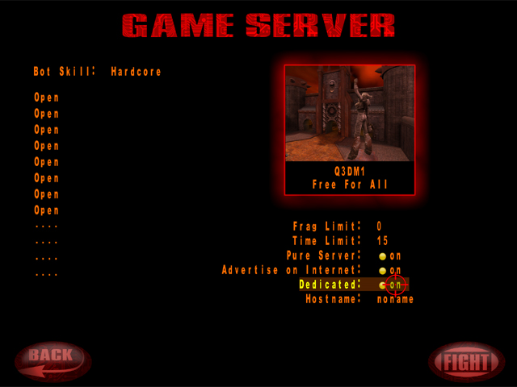

title says it all, trying to start a dedicated server for my pals and whenever I start the server program (both 32 bit and 64 bit) they both crash right when I start them. I’m wondering if anyone here could help me with this. or at least point me in the right direction. thank you all for your time.
Dedicated Server Crashes on startup
Yeah, I do confirm!
Unfortunately I can’t say whats wrong, since I never experienced this crash before.
I’m on Win7 64-bit, and I do use binaries and game code compiled by my own with Cygwin (latest code).
What about you? Do you download binaries or did you compile them for yourself, etc.?
Probably any further Information will help us. As a last ressort solution I can compile older commits of the code and see when the bug was introduced, but this takes time. I definitely know the dedicated exe worked once!
Two hints:
-
You can start a dedicated server due the main menu (you probbly already know this), maybe this helps you meanwhile, at least this still works for me, see screenshot:
 -
If you have access to Github (registered) you can also open a ticket if you find any issues concerning Spearmint: https://github.com/zturtleman/spearmint/issues
Thanks for reporting this bug! Stay tuned and let’s wait and see what zturtleman says, maybe he know whats going on here…
Rellik711
#3
I downloaded from binary, at the moment ive just been using the in game dedicated. but for long term I would think having the actual dedicated server app would be best. ive tried the binary for .4 and .3 both crash on startup. I am running windows 10 64 bit, i’m sure knowing the os will help as well.
here is a recording of my issue, once again. thank you so much for your time
zturtleman
#4
From my post on the Github issue:
Spearmint 0.4 and earlier print a message before the Windows console is initialized (
Con_Init()function) which may result in the command prompt crashing. Based on limited testing the crash seems to have been introduced by a Windows 10 update – possibly the Windows 10 Creators Update.The above issue has was fixed in ioquake3 and merged into Spearmint recently by calling
Con_Init()earlier in the start up process. However, this unexpectedly resulted in Spearmint crashing on all Windows versions due to the game title for the console window not being initialized yet. This is now fixed in 914ef50.Thanks. Here are fixed Spearmint 0.4 Windows server executables based on the latest development code: http://clover.moe/downloads/spearmint-server-0.4-20170820.zip
Edit: Also, you should check in the task manager to see if there are copies of spearmint-server still running and end them.
Rellik711
#5
I just ended the ones running in the background. thank you for fixing this! my quake buddies also thank you! works like a charm now.